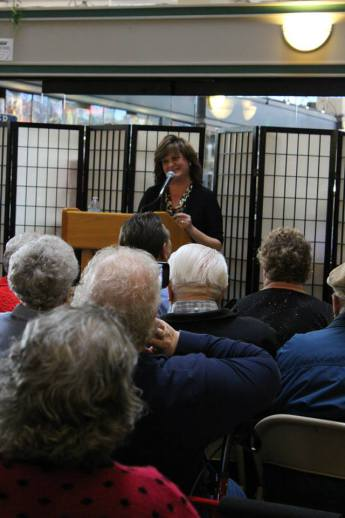

Like most writers I’m an avid reader. I’m never without a stack of books on my nightstand and usually have a book in my car or purse, too.
When you read a lot, it can be hard to keep of what you’ve read and what you want to read.
Enter Goodreads. It’s a delightfully easy way to track your reading, keep up with your favorite authors and discover new authors.
Goodreads also offers frequent book giveaways. Publishers ship the book directly to the winner and there’s no obligation to read or review.
I only enter giveaways if the book is something I really want to read or it’s by a favorite author. I’ve entered a lot of giveaways and last month I was notified that I’d won a copy of “Aunt Dimity & The King’s Ransom” by Nancy Atherton. I was beyond thrilled!
The “Aunt Dimity” books are exceptionally well-crafted, delightful British cozies and I haven’t missed one.
This week my doorbell rang and the UPS man handed me my copy of “The King’s Ransom.”
I admit it.
I hugged it. (At least I didn’t hug the UPS man.) Then I whooped. And might have hollered.
My teenager rolled his eyes, but I didn’t care. Books make me happy. And free books make me even happier!
If you haven’t joined Goodreads yet, you really should. You can follow your favorite authors *hint* Cindy Hval and connect with other readers.
Who knows? You may even win a free book
I’m really excited about my latest adventure!
Beginning August 12, I’ll be part of the program Spokane Talks on Fox 28 Spokane.
Every Sunday at 6 PM, the half hour show offers news, views and conversation.
My three-minute Front Porch segments will end each program. Kind of like Andy Rooney on 60-minutes, but with well-groomed eyebrows and no, “Didya ever wonder…”
I hope you’ll tune in to find out what the view from my Front Porch is like.
It’s usually rather sunny!
On Friday night, October 27 at Auntie’s Bookstore in Spokane I’ll be reading a sneak peek of Tiaras & Testosterone as part of author Kay Dixon’s launch of her newly released book Tales of Family Travel: Bathrooms of the World.
Kay has four daughters and I have four sons– we’ve got the family bases covered, and we covered it (and survived) with a huge amount of humor.
My first book War Bonds: Love Stories From the Greatest Generation (Casemate 2015) has been well-received and is still garnering great reviews. This time I’m tackling a more personal topic. For 10 years I’ve written a popular column for The Spokesman Review, chronicling my experience of life in a “man’s world” with poignancy, affection and a whopping dose of humor.
“Your columns read like what would happen if Anne Lamott and Erma Bombeck had a love child,” said one longtime subscriber.
Now, I’m collecting those columns in Tiaras & Testosterone.
Sections include Boy Crazy, Working from Home and Other Technical Difficulties, It’s a Woman’s World and Terrible Teens: Boys to Men.
Join Kay and I Friday night at 7 PM. I would offer a money back guarantee of a good time, but the event is free.
And I’m an author 🙂
Kay Dixon
Cindy Hval at Auntie's.